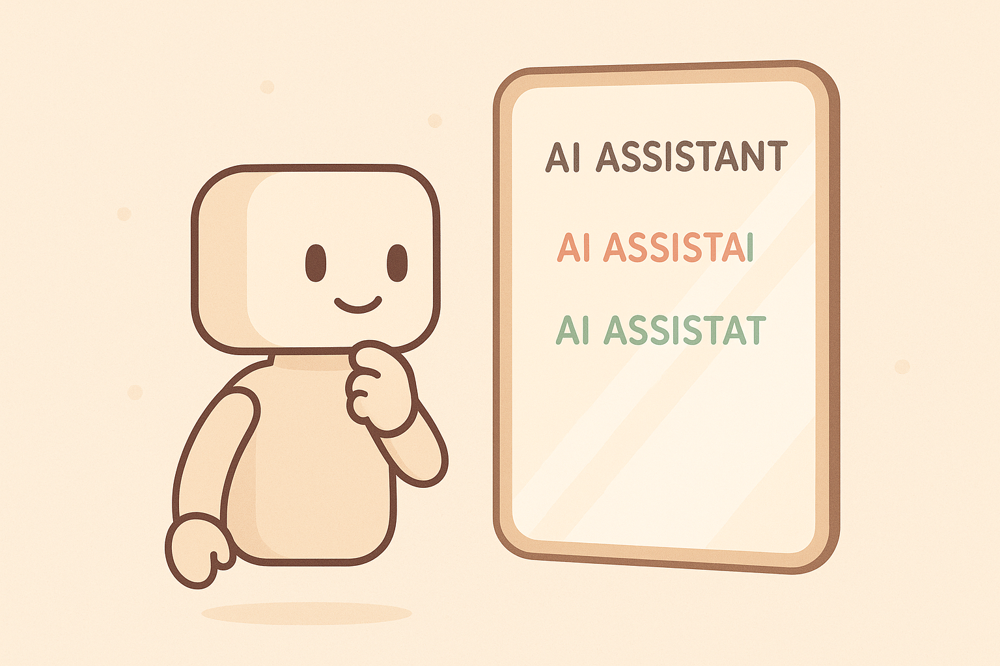

10 Fehler finden & verbessern: Output Verification
Stell dir vor, du hättest einen Assistenten, der extrem freundlich ist, dir jeden Wunsch erfüllt, superschnell arbeitet – aber leider manchmal Dinge erfindet. Er will dir nicht schaden, er möchte einfach nur helfen und glaubt, dass jede Antwort besser ist als keine. Genau so verhält sich KI. Und deshalb brauchst du eine Fähigkeit, die absolut entscheidend ist, wenn du KI in Schule, Studium oder Freizeit sicher und klug nutzen willst: Output Verification, also das systematische Überprüfen der KI-Antworten.
Dieses Kapitel zeigt dir:
👉 warum KI manchmal Unsinn erzählt (und das ziemlich überzeugend)
👉 wie du die häufigsten Fehler erkennst
👉 welche Kontrollfragen du der KI stellen kannst
👉 wie du sie dazu bringst, ihre eigenen Antworten kritisch zu prüfen
👉 einen Mini-Workflow, mit dem du dich nie wieder auf unkontrollierte KI-Antworten verlassen musstUnd das Ganze wieder so, dass du es sofort anwenden kannst – ohne Fachwissen, ohne komplizierte Konzepte.
10.1 Die Story: KI als „freundlicher, aber vergesslicher Assistent“
Lass uns zur Einführung eine kleine Szene vorstellen.
Du sitzt in deinem Zimmer und schreibst an einer Präsentation für die Schule. Das Thema: Erfindungen des 19. Jahrhunderts. Du tippst in die KI:
„Gib mir drei wichtige Erfindungen des 19. Jahrhunderts und eine kurze Erklärung für jede.“
Die Antwort wirkt überzeugend. Sie klingt logisch. Sie liest sich flüssig. Doch dann fällt dir etwas Komisches auf: Eine der angeblichen „Erfindungen“ stammt aus einem komplett anderen Jahrhundert.
Die KI hat nicht gelogen. Sie hat halluziniert – also eine plausible, aber falsche Information erzeugt.
Warum passiert das?
Weil Sprachmodelle nicht „wissen“. Sie berechnen, welche Wörter wahrscheinlich zusammenpassen. Sie kombinieren Muster, sie raten die nächsten Tokens voraus – und dabei kann etwas entstehen, das sehr glaubwürdig klingt, aber nicht stimmt.
Die KI ist wie ein hochmotivierter Assistent, der versucht, dich zu beeindrucken. Sie ist nicht böse. Aber sie ist nicht zuverlässig, wenn du blind vertraust.
Deshalb brauchst du ein neues Mindset:
„Nutze KI wie ein Werkzeug, nicht wie eine Wahrheit.“
10.2 Warum KI manchmal halluziniert – und warum das normal ist
Um KI zu verstehen, hilft dir ein simples Bild:
Sie ist nicht wie ein Lexikon, sondern wie ein Satz-Fortsetzer.
Wenn du schreibst:
„Die Hauptstadt von Frankreich ist …“
dann weiß die KI, dass „Paris“ die wahrscheinlichste Fortsetzung ist. Das ist ein gut trainiertes Muster.
Wenn du aber schreibst:
„Welche drei Handballnationalspieler haben die Dampfmaschine erfunden?“
dann ist schon in der Frage ein Fehler. Und die KI versucht trotzdem, sie zu beantworten – weil das ihr Job ist. Sie nimmt deinen Input ernst, selbst wenn er keinen Sinn ergibt.
Deshalb ist falscher Kontext einer der größten Halluzinations-Auslöser.
Weitere typische Gründe:
- fehlende Daten → Das Modell rät.
- Zeitbezug → Die KI kennt nur Daten bis zu einem bestimmten Punkt.
- zweideutige Fragen → Das Modell entscheidet sich für eine Richtung – auch wenn du etwas anderes gemeint hast.
- falsche Annahmen im Prompt → Und die KI spielt das Spiel mit.
Das Entscheidende:
Du kannst Halluzinationen nicht komplett verhindern – aber du kannst sie kontrollieren, erkennen und minimieren.
10.3 Wie du Fehler erkennst – ganz ohne Expertenwissen
Gute Nachricht: Dafür brauchst du keine Fachkenntnisse.
Es gibt drei einfache Warnsignale, die du immer benutzen kannst:
👉 Warnsignal 1: Perfekt klingende Sätze, aber ohne Details
Beispiel:
„Die Dampfmaschine wurde stark von verschiedenen Wissenschaftlern geprägt, die wichtige Beiträge leisteten.“
Klingt toll. Sagt aber nichts aus. Das ist ein typisches Muster für Unsicherheit: vage Formulierungen.
👉 Warnsignal 2: Falsche Sicherheit
Wenn die KI etwas behauptet, das extrem präzise klingt, aber du es noch nie gehört hast, gilt:
Misstrauen ist gesund.
Beispiel:
„Der deutsche Astronaut Markus Auer landete 1998 auf der ISS.“
→ Diese Person existiert nicht.
👉 Warnsignal 3: Perfekte Struktur + falscher Inhalt
Manchmal stimmt die Form (Einleitung – Aufzählung – Fazit), aber der Inhalt ist ausgedacht. Das passiert vor allem bei Referaten, Zusammenfassungen oder historischen Themen.
10.4 Die Kunst der Output Verification: Fehler finden like a pro
Jetzt kommt der wichtigste Teil:
Wie kontrollierst du KI-Antworten so, dass du immer sicherer wirst?
Hier sind die vier Kerntechniken, die du sofort einsetzen kannst.
👉 Technik 1: „Bitte cite deine Quellen“
Ein simples Mittel:
Bitte die KI, echte, überprüfbare Quellen zu nennen.
Beispiel:
„Bitte nenne echte, überprüfbare Quellen (mit Titel, Jahr und Autor), aus denen die Informationen stammen.“
Wenn die KI daraufhin Quellen nennt, die es nicht gibt, weißt du sofort:
👉 Warnsignal!
👉 Technik 2: „Gibt es Fehler in deiner Antwort?“
KI kann erstaunlich gut ihre eigenen Fehler korrigieren – wenn du sie dazu einlädst.
„Prüfe deine Antwort erneut. Falls etwas ungenau ist, korrigiere es.“
Das wirkt oft wie Magie. Die KI wechselt dann in einen kritischeren Modus.
👉 Technik 3: „Führe eine Faktenliste vs. Behauptungen an“
Damit zwingst du das Modell, seine Aussagen systematisch aufzuteilen.
„Bitte fasse alle Fakten auf der linken Seite und alle spekulativen Aussagen auf der rechten Seite in einer Tabelle zusammen.“
Dadurch siehst du auf einen Blick, wo Risiken liegen.
👉 Technik 4: „Gib mir drei alternative Antworten – und markiere Unterschiede“
Wenn die KI mehrere Versionen ihrer Antwort produziert, erkennst du abweichende Details. Diese Abweichungen zeigen dir, wo das Modell unsicher ist.
Beispiel:
„Erstelle drei Versionen deiner Antwort. Markiere die Stellen, an denen die Fakten voneinander abweichen.“
Wo KI abweicht, ist Vorsicht angesagt.
10.5 Wie du KI zwingst, sich selbst zu kontrollieren
Ein Trick, den professionelle Prompt-Ingenieure ständig nutzen, ist folgender:
👉 „Mach die KI zum Prüfer ihrer selbst.“Das geht mit einfachen Formulierungen:
👉 Selbstkontroll-Prompt 1:
„Bewerte deine eigene Antwort Schritt für Schritt. Wo könnten Fehler sein?“
👉 Selbstkontroll-Prompt 2:
„Was würde ein Experte vermutlich kritisieren?“
👉 Selbstkontroll-Prompt 3:
„Welche Aussagen benötigen überprüfbare Quellen? Markiere sie.“
👉 Selbstkontroll-Prompt 4:
„Gib mir eine Version mit hoher Vorsicht und weniger Spekulation.“
Diese Prompts wirken, weil du der KI eine neue Rolle gibst. Sie ist nicht mehr die kreative Autorin – sie ist jetzt die kritische Prüferin.
10.6 Der Mini-Workflow: „Trust, but verify“
Dieser kleine Ablauf rettet dich in jeder Situation. Nutze ihn, bevor du KI-Antworten an Lehrer, Professoren oder Freunde weitergibst.
👉 Schritt 1 – Generiere eine Antwort.
Nutze einen normalen Prompt. Beispiel:
„Erkläre kurz die Industrielle Revolution.“
👉 Schritt 2 – Stelle die Selbstprüf-Frage.
„Überprüfe deine Antwort. Markiere ungenaue oder spekulative Stellen.“
👉 Schritt 3 – Bitte um eine vorsichtigere Version.
„Erstelle eine Version, die nur bestätigte Fakten enthält.“
👉 Schritt 4 – Frage nach Quellen.
„Liste die verwendeten Quellen oder Begründungen auf.“
👉 Schritt 5 – Lasse dir eine Tabellenübersicht geben.
„Fasse die überprüften Fakten in einer Tabelle zusammen.“
Dieser Workflow ist kurz, einfach – aber enorm wirksam.
Im zweiten Teil von Kapitel 10 gehen wir noch tiefer hinein:
👉 die größte Falle: KI klingt richtig, weil sie rhetorisch gut ist
👉 wie du „Faktenanker“ setzt, damit KI weniger rät
👉 wie du die KI dazu bringst, nicht zu erfinden
👉 wie du komplexe Antworten zuverlässig prüfen lässt
👉 praktische Übungen (Schule, Lerntexte, Coding, Social Media)
Außerdem bekommst du dort einen vollständigen Output-Verification-Masterprompt, den du immer wieder verwenden kannst.
Im ersten Teil hast du gelernt, dass KI manchmal wie ein motivierter, aber zerstreuter Assistent arbeitet: schnell, kreativ, hilfsbereit – aber nicht immer sauber, korrekt oder logisch. Das gehört zur Natur generativer Modelle. Jetzt machen wir einen Schritt weiter: Du lernst nochmal intensiver, wie du Fehler aktiv aufspürst, reparierst und die KI zwingst, sich selbst zu überprüfen. Denn gute Prompt-Engineers vertrauen nicht blind – sie kontrollieren.
10.7 Die KI ist kein Wissensspeicher – sie ist ein Muster-Macher
Ein häufiger Denkfehler ist:
👉 „Die KI weiß alles.“Nein.
Sie speichert nicht wie ein Lexikon, sondern rekonstruiert Muster basierend auf Wahrscheinlichkeiten. Wenn du also fragst:
„Gibt es in Spanien Schneeleoparden?“
kann es passieren, dass die KI antwortet:
„Ja, in den Pyrenäen gibt es eine kleine Population.“
Das klingt plausibel, ist aber falsch.
Und genau deswegen brauchst du einen zuverlässigen Output-Verification-Workflow, der dir hilft, solche Fallen früh zu erkennen.
10.8 Wie du typische Fehlerquellen erkennst
Es gibt bestimmte Muster, bei denen die Wahrscheinlichkeit für Fehler besonders hoch ist. Du solltest sie sofort bemerken, so wie ein Pilot Alarmleuchten scannt.
🔴 Fehlerquelle 1: Zu genaue Zahlen
Wenn eine KI präzise Statistiken (z. B. „12.438 Menschen“) nennt, solltest du sofort skeptisch werden. Solche Zahlen sind häufig frei erfunden.
🔴 Fehlerquelle 2: Falsche Quellenangaben
Modelle behaupten manchmal, Quellen existieren – obwohl es sie nicht gibt (Halluzinationen). Das gilt besonders für Bücher, Studien und wissenschaftliche Paper.
🔴 Fehlerquelle 3: Übermäßige Sicherheit
Wenn eine Antwort extrem selbstbewusst klingt, obwohl der Inhalt offensichtlich banal oder zweifelhaft ist, ist das ein Warnsignal.
🔴 Fehlerquelle 4: Verwechslung von Konzepten
Beispiel:
– Mix aus historischen Ereignissen
– Vermischte Fakten über Tiere, Länder, Personen
– Mathematische Logikfehler
🔴 Fehlerquelle 5: Oberflächliche Argumentationen
Wenn du um Begründungen bittest und nur Allgemeinplätze bekommst, ist Vorsicht geboten.
10.9 Wie du Fehler finden kannst – ein strukturierter Ansatz
Das Ziel ist nicht, die KI zu „besiegen“, sondern mit ihr zusammenzuarbeiten, als wärst du der Teamleiter.
👉 Schritt 1: Lies die Antwort nicht oberflächlich
Viele nutzen KI so:
- Prompt eingeben
- Antwort lesen
- Direkt übernehmen
Das ist gefährlich.
Stell dir bei jeder Antwort mindestens drei Fragen:
- Wirkt das logisch?
- Kenne ich einen Teil davon schon – und passt er zur Antwort?
- Sind konkrete Zahlen oder Begriffe plausibel?
👉 Schritt 2: Stelle eine gezielte Gegenfrage
Fordere die KI auf, ihre Antwort kritisch zu prüfen:
„Überprüfe deine Antwort auf sachliche Fehler.“
„Gibt es Teile deiner Antwort, die du nicht sicher weißt?“
„Liste alle Aussagen auf, die möglicherweise falsch sind.“
Interessant: Die KI findet oft eigene Fehler, weil du sie in eine Meta-Ebene zwingst.
👉 Schritt 3: Lass die KI Alternativen vergleichen
Vergleich hilft, Fehler zu entlarven:
„Gib mir die gleiche Antwort noch einmal, aber mit maximaler Vorsicht und Unsicherheit.“
„Erstelle eine Version mit Zitaten und eine ohne – und markiere Unterschiede.“
„Gib mir drei alternative Antworten und zeige, worin sie sich unterscheiden.“
Wenn Version A und B stark abweichen, musst du besonders kritisch sein.
👉 Schritt 4: Nutze Cross-Verification
Ein simpler, effektiver Trick:
Stelle dieselbe Frage zweimal, aber leicht umformuliert.
Wenn die Ergebnisse voneinander abweichen, weißt du, dass die Antwort unsicher ist.
Beispiel:
– „Welche Tiere leben in den Pyrenäen?“
– „Gibt es große Raubtiere in den Pyrenäen?“
Wenn Version A von Schneeleoparden spricht und Version B nicht… Alarm.
👉 Schritt 5: Lass die KI ihre Antwort neu begründen
Der beste Test:
„Erkläre Schritt für Schritt, wie du zu deiner Antwort gekommen bist.“
Wenn die KI keine klare Begründung liefern kann oder die Schritte merkwürdig wirken, ist das ein Hinweis: Die Antwort war unzuverlässig.
10.10 Wie du die KI zwingst, sich selbst zu kontrollieren

Jetzt kommt der praktische Teil: konkrete Techniken, die sofort wirken.
👉 Technik A: Der „kritische Modus“
Ein einfacher Zusatz zu jedem Prompt:
„Sei kritisch. Markiere mögliche Unsicherheiten oder Fehler.“
Plötzlich wird die KI vorsichtiger und überprüft sich selbst.
👉 Technik B: Der „Begründe alles“-Modus
„Hänge an jede wichtige Aussage eine kurze Begründung an.“
Das zwingt die KI zu Logik statt zum Raten.
👉 Technik C: Der „Faktenfilter“
„Gib nur Informationen aus, für die du mindestens 70% Sicherheit hast.
Markiere unsichere Stellen mit ⚠️.“
Dies reduziert Halluzinationen deutlich.
👉 Technik D: Der „Widersprich dir selbst“-Prompt
„Liste mögliche Gegenargumente zu deiner eigenen Antwort auf.“
Wenn diese gut sind, war die Ursprungsversion vielleicht fehlerhaft.
👉 Technik E: Der „Quellenprüfer“
Auch wenn KI keine echten Echtzeitquellen ziehen kann, kannst du sie zwingen, einen internen Logikcheck zu machen:
„Gib mir sechs mögliche Quellen oder Studien, die deine Antwort unterstützen könnten – und bewerte, wie wahrscheinlich es ist, dass sie existieren.“
Die KI beginnt automatisch, Plausibilität zu reflektieren.
10.11 Praxis: Der Mini-Workflow „Trust, but verify“
Hier ist der vollständige Workflow – du kannst ihn direkt auswendig lernen. Er besteht aus vier kurzen Phasen, die zusammen nur 30 bis 60 Sekunden dauern.
🔵 Phase 1: Sofortcheck
Frage dich:
- Klingt alles plausibel?
- Sind Zahlen realistisch?
- Kenne ich Widersprüche?
Wenn ja → weiter. Wenn nein → zur Gegenfrage.
🔵 Phase 2: Gegenfrage an die KI
Ein Satz reicht:
„Markiere mögliche Fehler in deiner Antwort.“
Oder:
„Überprüfe alle Fakten kritisch.“
Wenn die KI Korrekturen vornimmt – gut. Wenn nicht – vergleiche Varianten.
🔵 Phase 3: Zweitversion erzeugen
Du sagst:
„Gib mir eine alternative Version — vorsichtiger und mit Erklärungen.“
Wenn sich die Versionen stark unterscheiden, ist die Antwort unsicher. Dann → weiter prüfen.
🔵 Phase 4: Finalisieren & Klarstellen
Wenn du zufrieden bist:
„Fasse die geprüfte Version klar und sachlich in drei Sätzen zusammen.“
Jetzt bekommst du eine saubere, komprimierte, geprüfte Antwort.
10.12 Beispiel: Eine fehlerhafte Antwort reparieren
Nehmen wir ein Szenario aus dem Alltag:
👉 Initialfrage
„Erstelle mir eine kurze Zusammenfassung über Marie Curie.“
👉 Antwort der KI (beispielhaft fehlerhaft)
„Marie Curie war eine deutsche Physikerin, die das Polonium entdeckte und 1938 den Nobelpreis erhielt.“
Klingt gut – ist aber falsch. Sie war polnisch-französisch, entdeckte Polonium und Radium, und erhielt 1903 und 1911 Nobelpreise.
Jetzt kommt dein Workflow:
👉 Schritt 1 – Sofortcheck
Du merkst: „Deutsch? 1938? Passt nicht.“
👉 Schritt 2 – Gegenfrage
„Bitte überprüfe deine Antwort auf Fehler.“
KI korrigiert vielleicht:
„Entschuldigung, Marie Curie war keine Deutsche…“
👉 Schritt 3 – Zweitversion
„Gib mir eine vorsichtige, geprüfte Version mit kurzen Begründungen.“
Die KI antwortet:
„Marie Curie war eine polnischstämmige Physikerin…
Ich bin mir sicher, weil dies in vielen historischen Berichten genannt wird.“
👉 Schritt 4 – Zusammenfassen
„Fasse deine geprüfte Version in drei klaren Sätzen zusammen.“
Damit hast du eine saubere Mini-Biografie ohne Fehler.
10.13 Wie du aus Fehlern Vorteile machst
Ein erfahrener Prompt-Engineer sieht Fehler nicht als nervig – sondern als Hinweise. Jeder Fehler zeigt:
- Wo die KI unsicher ist
- Welche Prompt-Techniken du verbessern kannst
- Welche Aufgaben KI besonders gut oder schlecht beherrscht
- Wie du deinen Prompt konkretisieren solltest
Fehler sind Lehrer. Je früher du sie erkennst, desto besser wirst du.
Hier ist ein praktischer Tipp: Führe ein kleines „Prompt-Fehler-Tagebuch“. Notiere:
- Welche Fehler häufig passieren
- Welche Korrekturen am besten funktionieren
- Welche Prompts zuverlässig Qualität bringen
Nach zwei Wochen wirst du merken, dass du fehlerhafte Antworten sehr schnell erkennst – wie ein KI-Detektiv.
10.14 Mini-Übung: Finde die Fehler!
Hier sind drei kurze KI-Antworten (von mir erfunden).
Deine Aufgabe: Finde die Fehler und korrigiere sie.
👉 Antwort 1:
„Oktopusse haben sieben Arme und erreichen eine Größe von 12 Metern.“
👉 Antwort 2:
„Leonardo da Vinci wurde im Jahr 1702 geboren und malte die Mona Lisa in seiner Jugend.“
👉 Antwort 3:
„Die Hauptstadt von Australien ist Sydney.“
👉 Lösungsideen (ohne Details):
- Oktopusse haben acht Arme, 12 Meter sind übertrieben.
- Leonardo da Vinci: falsches Jahrhundert.
- Hauptstadt von Australien ist Canberra.
Wenn du solche Fehler sofort erkennst, bist du bereit für echte „Output Verification“.
10.15 Die wichtigste Fähigkeit: Neugierig bleiben
Output Verification ist kein trockener Prozess – es ist ein Spiel:
👉 Kann ich die KI dabei erwischen, wie sie etwas durcheinanderbringt?
Je besser du wirst, desto schneller erkennst du Muster. Und irgendwann merkst du:
👉 „Ich bin jetzt nicht mehr nur Nutzer – ich bin Kontrollinstanz.“Genau das ist das Ziel.
10.16 Ausblick auf Kapitel 11
Im nächsten Kapitel gehen wir einen Schritt weiter: Wir verbinden das Prüfen von KI-Antworten mit deiner eigenen kreativen Kontrolle.
In Kapitel 11 lernst du:
👉 Wie du Schreibstil, Länge und Inhalt einer Antwort gezielt steuerst
👉 Wie du aus einer mittelmäßigen KI-Antwort eine brillante Version machst
👉 Wie du Revision, Umschreiben und Variantenbildung meisterst
👉 Wie du die KI als Werkzeug für Feinschliff und Verbesserung nutzt Du wirst merken: Sobald du nicht nur Fehler findest, sondern Antworten bewusst verbesserst, erreichst du das nächste Level im Prompt Engineering.